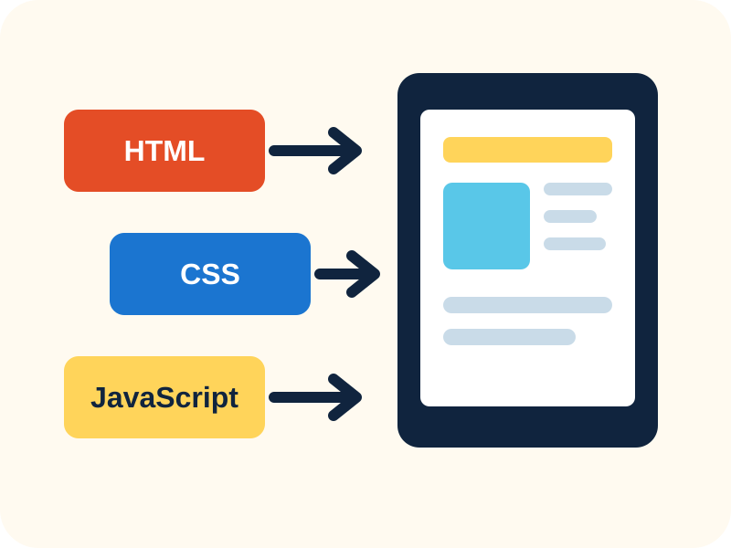

Project Story
How I built this site
This page gives a short account of the work from the first idea to the final test.

The Main Tools
Three parts work together
I used HTML for the page content and links. I used CSS for colour, space and phone layouts. I used JavaScript for the quote button and the game.
The site does not use a login or a database. It is a simple student website that can run with Live Server.
Build Process
From plan to working pages
- Plan the pages. I chose Home, Quotes, Contact, Project and Game. I wrote one clear job for each page.
- Write the HTML. I added headings, short text, links, pictures and the same navigation on every page.
- Add the design. I made one colour style and used flexible layouts so the site works on a large screen and a phone.
- Add JavaScript. I made a quote button and a twenty-second star game that answers the user.
- Test the website. I checked every link, picture and button. I also checked the five pages at phone size.